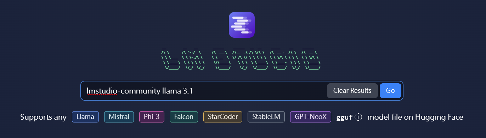
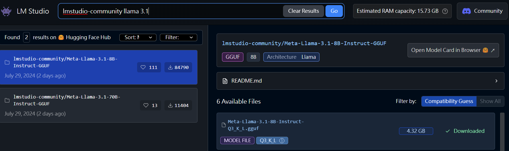
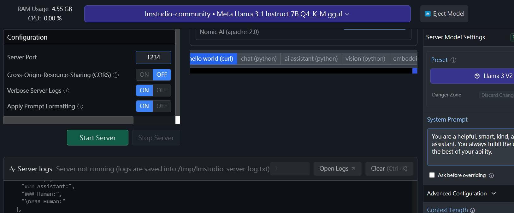

Barbara 是一款 Chrome 擴充工具，利用本地運行的大語言模型（如 LMStudio 或 llama.cpp），提供雙語翻譯、文章摘要及互動聊天功能。這款工具能夠在本地電腦上執行，確保您的數據隱私。
為了啟用 Barbara 的完整功能，您需要在本機安裝 LMStudio 並下載相應的模型。以下是詳細的步驟：
首先，訪問 LMStudio 官方網站，下載最新版本的 LMStudio 安裝包。
下載完成後，按照安裝向導進行安裝。
安裝完成後，打開 LMStudio。在「模型」選項卡中，選擇您需要的模型並下載。
模型下載完成後，返回主頁面，點擊「啟動伺服器」按鈕。這將啟動本地伺服器，使 Barbara 能夠連接並運行各項功能。
完成這些步驟後，您就可以在 Barbara 中使用翻譯、摘要和聊天功能了！
預設伺服器位在本機，因此預設位址會是localhost。但如果是在其他地方，這裡可以設定位址。例如LLM安裝在樹莓派，則這裡可能可以設定為raspberrypi.local。